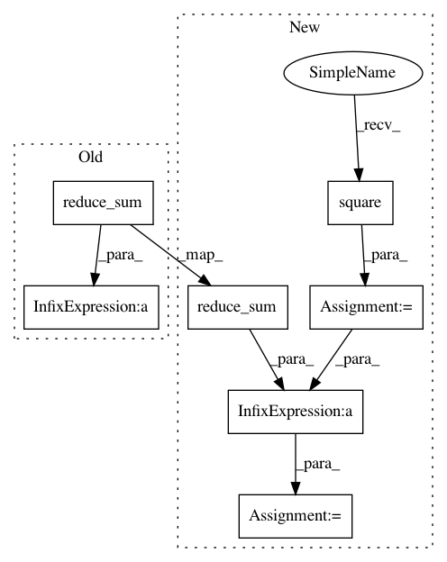

54633472520dc22cf9f91925eb76e9b8032fbb4c,cleverhans_tutorials/tutorial_models.py,Linear,set_input_shape,#Linear#Any#,73
Before Change
self.input_shape = [batch_size, dim]
self.output_shape = [batch_size, self.num_hid]
init = tf.random_normal([dim, self.num_hid], dtype=tf.float32)
init = init / tf.sqrt(1e-7 + tf.reduce_sum(tf.square(init), axis=0,
keep_dims=True))
self.W = tf.Variable(init)
self.b = tf.Variable(np.zeros((self.num_hid,)).astype("float32"))
def fprop(self, x):
After Change
". This version will not be supported by cleverhans" + \
"in the future."
_logger.warn(warning)
init_square_sum = tf.reduce_sum(tf.square(init),
axis=0, keep_dims=True)
else:
init_square_sum = tf.reduce_sum(tf.square(init),
axis=0, keepdims=True)
init = init / tf.sqrt(1e-7 + init_square_sum)
self.W = tf.Variable(init)
self.b = tf.Variable(np.zeros((self.num_hid,)).astype("float32"))
def fprop(self, x):
In pattern: SUPERPATTERN
Frequency: 3
Non-data size: 7
Instances
Project Name: tensorflow/cleverhans
Commit Name: 54633472520dc22cf9f91925eb76e9b8032fbb4c
Time: 2018-07-03
Author: krishnaphaniiitg@gmail.com
File Name: cleverhans_tutorials/tutorial_models.py
Class Name: Linear
Method Name: set_input_shape
Project Name: tensorflow/cleverhans
Commit Name: 4a98678d4a52bc32f9c25493fa248ba5aed16dde
Time: 2018-07-01
Author: krishnaphaniiitg@gmail.com
File Name: cleverhans_tutorials/tutorial_models.py
Class Name: Linear
Method Name: set_input_shape
Project Name: NifTK/NiftyNet
Commit Name: 7d9d506e77585e5600b45dc41da1a731a4b30722
Time: 2017-04-27
Author: z.eaton-rosen@ucl.ac.uk
File Name: nn/loss.py
Class Name:
Method Name: sensitivity_specificity_loss